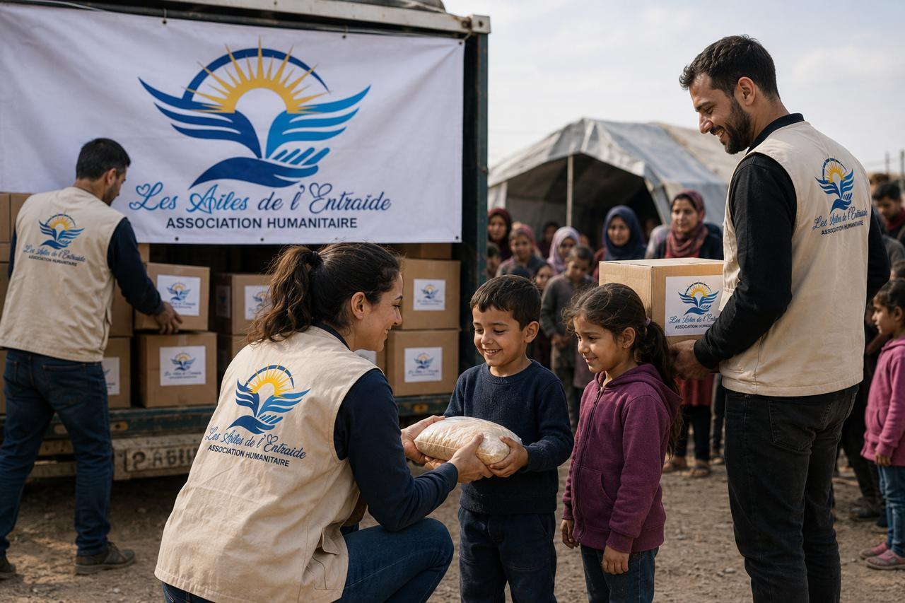
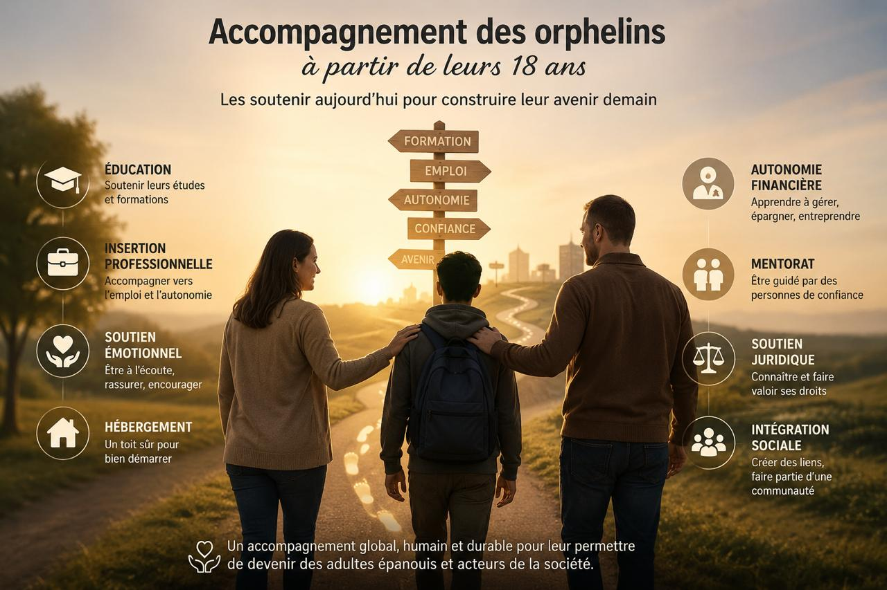
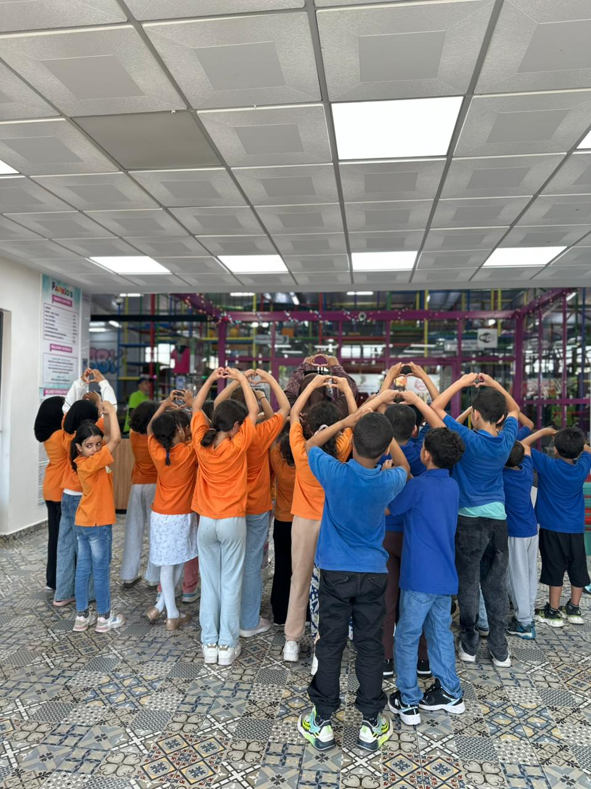

Des projets concrets au service des plus vulnérables
Découvrez l'ensemble des programmes que nous menons tout au long de l'année pour améliorer le quotidien des orphelins et des familles en difficulté.
Programme de parrainage scolaire
Ce programme permet à des dizaines d'enfants orphelins de poursuivre leur scolarité grâce au soutien régulier de parrains et marraines.
- Prise en charge des frais de scolarité
- Fourniture de matériel scolaire
- Suivi pédagogique personnalisé
- Cours de soutien pour les élèves en difficulté

Distributions de paniers alimentaires
Chaque mois, nos équipes distribuent des paniers alimentaires aux familles les plus démunies, en particulier durant les périodes les plus difficiles de l'année.
- Distribution mensuelle dans plusieurs quartiers
- Paniers adaptés à la taille des familles
- Opérations spéciales pendant les fêtes
- Collecte de denrées auprès de partenaires locaux

Missions humanitaires solidaires
Les Ailes de l'Entraide œuvre chaque jour pour venir en aide aux personnes les plus vulnérables, en plaçant l'humain, la bienveillance et la solidarité au cœur de chacune de ses actions.
Grâce à la générosité de nos donateurs, nous apportons un soutien concret aux orphelins, aux veuves, aux personnes en situation de handicap ainsi qu'aux familles en grande précarité.
- Organisation de sorties, d'activités et de fêtes pour offrir des moments de bonheur aux orphelins
- Distribution d'aides alimentaires, de colis solidaires et de produits de première nécessité
- Soutien aux veuves, aux personnes en situation de handicap et aux familles en difficulté
- Organisation d'opérations solidaires tout au long de l'année : Aïd Al-Adha, Ramadan, rentrée scolaire et actions d'urgence
- Accompagnement des personnes dans le respect de leur dignité, avec écoute, bienveillance et discrétion
Notre mission est simple : redonner de l'espoir, semer le sourire et faire du bien, uniquement pour la satisfaction d'Allah.
Parce qu'un simple geste de générosité peut transformer une vie.

Accompagnement des Orphelins à partir de leurs 18 ans
Chez Les Ailes de l'Entraide, notre engagement ne s'arrête pas à leurs 18 ans. Être majeur ne signifie pas ne plus avoir besoin d'aide. C'est souvent le début des plus grands défis : construire son avenir sans le soutien de ses parents.
Notre mission est de continuer à marcher à leurs côtés en leur apportant écoute, accompagnement, soutien moral, administratif et, selon les besoins, une aide matérielle pour qu'ils puissent avancer avec dignité et espoir.
- Accompagnement vers l'autonomie
- Soutien moral et administratif
- Aide selon les besoins essentiels
Parce qu'à 18 ans, un orphelin ne cesse pas d'être orphelin… Il a simplement encore plus besoin d'une main tendue.

Journées de solidarité et activités récréatives
Tout au long de l'année, nous organisons des journées dédiées aux enfants : sorties, ateliers créatifs et moments de partage pour leur offrir des souvenirs heureux.
- Sorties éducatives et culturelles
- Ateliers artistiques et sportifs
- Fêtes de fin d'année et distribution de cadeaux
- Camps de vacances solidaires
